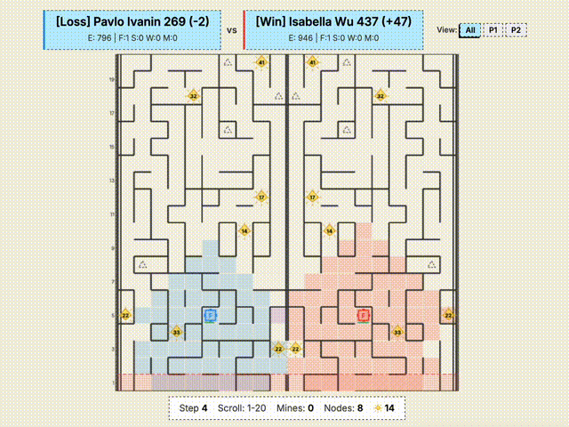
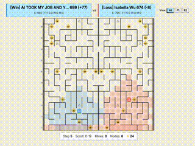
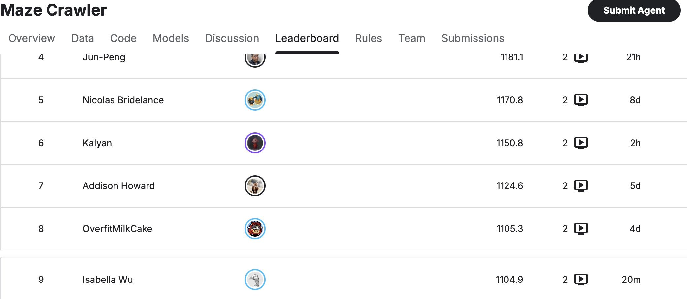
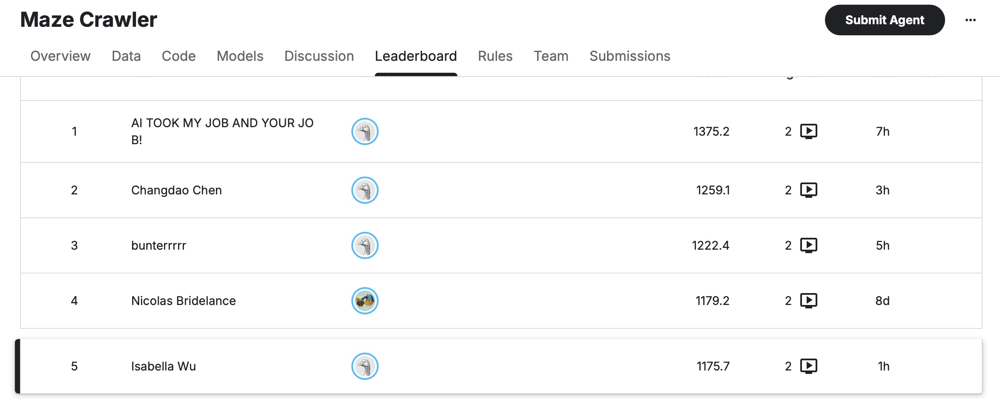
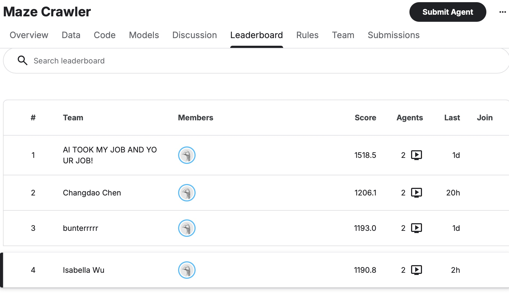

MAZE
CRAWLER
A development blog for Kaggle’s Maze Crawler competition — a two-player scrolling-maze RTS. The story of my journey from rank 400 to the top 4: the levels, the lessons, and what hundreds of games taught me about discipline, measurement, and survival.
Not a mockup — a real game.
A live Kaggle replay: my agent (P2, right side) out-banks an opponent on energy. Two mirrored mazes, the scroll closing in, crystals and mining nodes scattered through the fog.

The bright original render — this is the actual game the dark arcade screen above is paying tribute to. Isabella Wu · +47 energy · win.
A maze that eats you from behind.
Two factories start at the bottom of a 20-column maze that scrolls relentlessly north. Fall behind the boundary and you’re crushed. Fog of war hides the walls, the crystals, and the enemy. Out-survive your opponent — or out-bank them on energy when the clock runs out.
Factory
Builds robots, jumps every 20 turns, and is an unlimited well of energy. Lose it and the game is over.
Scout
Cheap, fast vision. Lifts the fog, grabs crystals, and carries value home before it dies.
Worker
The wall-breaker. Clears the lane ahead of a blocked factory; builds and removes walls.
Miner
The long game. Transforms on a node into a mine that prints energy — if you can keep it alive.
Not a neural net. A graph, a heuristic, and four jobs.
I built a strong algorithmic baseline first — behavior you can reason about and debug — starting from greedy moves, adding per-unit memory, then upgrading to real search. The core turned out to be a data-structures problem in disguise.
The maze is a graph
Every reachable cell is a node, every legal move an edge. Once I stopped seeing tiles and saw a graph, BFS gave shortest paths around walls — and wasting a turn can mean death.
Cooldown is part of the state
Once jumps entered the picture, position alone couldn’t describe a robot’s future. The search state became (col, row, jump_cd) — location plus mobility.
A deque and a visited set
A deque frontier, a set for visited states, tuples for positions — the queue-and-hash-set pattern straight out of CSCI 104, made real by a maze that punishes a wrong expansion.
Rank cheap, route careful
Manhattan distance ranks crystals, nodes and frontiers for almost nothing; BFS then commits to the chosen target safely. Heuristic where info is uncertain, search where structure is reliable.
Four units, one anchor, short memories
The factory is the strategic anchor; scouts, workers and miners each have a job. Persistent per-unit memory adds lightweight tabu behavior so units stop oscillating in corridors.
From 400 to the top 4, one fixed mistake at a time.
Almost none of the gains came from a clever new algorithm. They came from sitting with losing replays and removing the bad behavior I found. Every level below is a real ladder jump.
▸ Click a level to read the full entry from the dev log.
LV 1Search & stability
Greedy moves out, deliberate BFS planning in — jump-aware routing and destination reservation so units stopped colliding with themselves.
~670rating▸
Search & stability
Greedy moves out, deliberate BFS planning in — jump-aware routing and destination reservation so units stopped colliding with themselves.
One of the first really encouraging moments was the bot moving from roughly the 400 range into the 670 range. The improvement came from several changes working together: replacing local greedy movement with deliberate search-based planning, improving factory survival through better northward routing and jump-aware navigation, reducing friendly interference through destination reservation, using maze symmetry to make better decisions before the full map is visible, and preserving mining-node locations instead of rediscovering them. The whole bot started feeling less random — and in a ladder setting, avoiding one bad loss is often worth more than finding one flashy win.
dev log · Search & StabilityLV 2Factory danger mode
When the scroll gets close, drop everything: stop feeding workers, stop spawning, and switch to survival-only routing with jumps as the escape hatch.
+survivefewer deaths▸
Factory danger mode
When the scroll gets close, drop everything: stop feeding workers, stop spawning, and switch to survival-only routing with jumps as the escape hatch.
Sitting with losing replays showed the factory still making wrong choices once the scroll got close — spending energy on support behavior, drifting sideways or backward, even spawning units at the exact moment survival should have been the only thing that mattered. The fix was an explicit factory danger mode: when the factory gets too close to the southern boundary, normal convoy logic is overridden. It stops feeding workers, stops spawning, and switches to a survival-only routing mode focused on moving NORTH/EAST/WEST with no low-value detours, with jump logic kept as an emergency escape. Strong bots are often improved less by adding complexity and more by removing bad behavior in the highest-risk states.
dev log · Factory Danger ModeLV 3Stop bankrupting the factory
One game it hit zero energy by turn 191 and just waited to die. Stricter reserves made factory energy a protected survival resource, not a battery.
~730rating▸
Stop bankrupting the factory
One game it hit zero energy by turn 191 and just waited to die. Stricter reserves made factory energy a protected survival resource, not a battery.
A different kind of failure: the factory wasn’t dying because it was trapped too low — it was slowly bankrupting itself. In one episode it looked fine positionally for a long time but reached 0 energy by roughly turn 191, then was basically a dead object waiting for the scroll to finish the job. The problem was economic collapse from overspending on workers and transferring too much energy into them. The fix: stricter factory energy reserve rules — worker, scout, and miner production now require larger minimum buffers, and factory-to-worker transfers are only allowed when the factory is both safe and meaningfully rich. This coincided with a jump from the 670 range into the 730 range.
dev log · Energy Reserve FixBOSS“AI TOOK MY JOB AND YOUR JOB!”
Lost to a bot that opened an early mine and snowballed energy uncontested. The wake-up call: a stable convoy still loses to compounding income.
DEFEATlearn & retry▸
“AI TOOK MY JOB AND YOUR JOB!”
Lost to a bot that opened an early mine and snowballed energy uncontested. The wake-up call: a stable convoy still loses to compounding income.
One of the clearest strategic wake-up calls came from losing to a bot named “AI TOOK MY JOB AND YOUR JOB!”. Even with a relatively stable convoy, the agent could still lose badly to an opponent that got an early mine economy running and then snowballed factory energy from there. The opponent transformed a miner into a mine very early and used that long-term income to outscale the convoy strategy — not a sudden tactical collapse, but a slower strategic defeat from being economically outclassed. The response: make the miner policy respond more aggressively when known mining nodes are nearby and realistically reachable, while still treating factory survival as the top priority. Safety and economy aren’t competing ideas — a competitive agent eventually needs both.

LV 4Know when not to build
The biggest jump was restraint — in no-mine games, cap the workers, delay the scouts, and hoard for the tiebreak. Then clamp speculative scouts entirely.
top 10~1100▸
Know when not to build
The biggest jump was restraint — in no-mine games, cap the workers, delay the scouts, and hoard for the tiebreak. Then clamp speculative scouts entirely.
A late-game pattern kept showing up: poor production decisions in long tiebreak-heavy games. In one replay the factory survived all the way to the step-500 tiebreaker but still lost, because it spent too much of its economy on extra workers and a scout without ever turning that into a mine. So the production policy got tighter: when there are no known open mining nodes, the factory treats that as a signal to play much leaner — worker count capped, scouts delayed behind a higher energy threshold, larger production reserved for a real mine plan. Scout production was then clamped harder still — no scouts in no-mine games, none while stranded zero-energy scouts are on the board. This was the strongest leaderboard jump so far, into the top 10 and the ~1100 range. Restraint turned out to matter as much as pathfinding.

LV 5Commit, then cut losses
A miner only counts if it converts. Commitment filters, explicit abort logic, and stale-miner recovery taught the bot to walk away from a failing plan.
#7 → #51133 → 1175▸
Commit, then cut losses
A miner only counts if it converts. Commitment filters, explicit abort logic, and stale-miner recovery taught the bot to walk away from a failing plan.
Recognizing that mining mattered wasn’t enough — the bot could still commit to the wrong miner at the wrong time, building one off weak information that never transformed and behaved like a 300-energy sink. Three fixes, three small ladder steps. Commitment filter: early miners now require a nearby visible node rather than only a remembered one, a healthier energy cushion, and no speculative follow-ups once a friendly mine exists. Abort logic: miners evaluate whether a node plan is still credible by distance, scroll pressure, and energy — if not, they stop acting like an investment and return toward the factory to salvage value. Stale-miner recovery: lightweight per-unit memory notices when a miner is stuck too long without converting and treats it as a failed investment. Rank 7 → 5, roughly 1133 → 1175.

LV 6Don’t trade factories at a loss
A factory-trade filter: estimate where the enemy factory can move next turn and refuse a mutual collision unless the tiebreak favors us.
+wincleaner endgames▸
Don’t trade factories at a loss
A factory-trade filter: estimate where the enemy factory can move next turn and refuse a mutual collision unless the tiebreak favors us.
A completely different kind of mistake showed up in late-game routing. Sometimes the bot chose a move that looked tactically reasonable but led straight into a mutual factory collision that favored the opponent on the tiebreak. In the replay that exposed it, both factories died on the same turn, but the opponent still had one extra surviving unit — so the collision wasn’t neutral at all, it was a losing trade dressed up as a dramatic ending. The fix: a factory-trade filter. The bot estimates the cells the enemy factory could also occupy next turn and compares surviving non-factory unit counts on both sides. If the opponent has the tiebreak advantage, the factory becomes much more cautious about moves or jumps that allow a mutual collision, and reroutes to a safer path. A trade is fine when the tiebreak is yours — a blunder when it isn’t.
dev log · Factory Trade FilterLV 7Win the row race
Several losses had energy to spare — the problem was height. A no-idle fallback made the factory fight for vertical progress every single turn instead of settling.
#4~1190▸
Win the row race
Several losses had energy to spare — the problem was height. A no-idle fallback made the factory fight for vertical progress every single turn instead of settling.
This batch changed how I thought about late games. Several losses happened with plenty of factory energy still left — the problem wasn’t bankruptcy, it was height. What kept happening was subtle: the factory would fail to find a satisfying long route, fall back to something passive, and quietly lose a row or two. That sounds small until the scroll makes those rows the whole game. So late-game routing stopped being all-or-nothing — if the ideal long push isn’t there, the factory now looks harder for the best reachable northward progress instead of treating the turn as dead. A stronger no-idle fallback followed: when tied or behind on rows, the factory has much less permission to settle and must keep finding some form of safe vertical progress. This run reached rank 4, around 1190.

LV 8Study the champions
The strongest replays leaned off workers, opened with scouts, and converted node info into mines fast. I borrowed the style — early tempo, clean commitments.
+styleopening tempo▸
Study the champions
The strongest replays leaned off workers, opened with scouts, and converted node info into mines fast. I borrowed the style — early tempo, clean commitments.
Reviewing strong opponents’ replays was useful for a different reason than reviewing losses — it showed what clean, effective play looked like when it was working. The biggest pattern wasn’t one exact recipe but a style: the strongest replays were much less dependent on workers than I expected, much more comfortable opening with scouts, and much faster about turning real node information into miner conversions. They also avoided the awkward middle ground where the factory spends on support without gaining either map control or a real mine economy. That changed the opening in a specific way: miner-first openings are now rarer unless the node signal is genuinely strong, early workers need a more direct justification, and scout-first lines get more room before the factory commits. Not copying one player move-for-move — borrowing the lesson that early tempo and clean commitments beat filling the board.
dev log · Studying Strong OpponentsBONUSBuild the simulator → economy unlocked
Got the game running locally, A/B-tested every idea, and finally shipped a working mine-to-factory economy the harness confirmed.
NEWmeasured▸
Build the simulator → economy unlocked
Got the game running locally, A/B-tested every idea, and finally shipped a working mine-to-factory economy the harness confirmed.
For a long time every change was an educated guess validated days later by the ladder. So I got the game running locally — Kaggle’s crawl environment ships inside kaggle-environments — and wrote a harness that plays a candidate against a frozen build over many seeds, both sides, and reports win-rate. The loop became propose, measure, keep only what wins. It immediately killed five plausible survival ideas I’d have shipped on faith (convoy escort 18%, force-north 8%, conserve-jump 2%, dodge 40%) and confirmed the one that wasn’t obvious: a working mine-to-factory economy, where miners reliably transform on nodes and the factory detours to harvest its own mines before the scroll crushes them. It tripled the energy in mining games — measured, not hoped. More in Training Mode ↓
Then I stopped guessing.
For a long time every change was an educated guess, validated days later by the ladder. So I got the game running locally and wrote a harness that plays a candidate against a frozen build over many seeds — both sides — and reports win-rate. The loop became propose, measure, keep only what wins.
Replay intuition is a hypothesis, not a result. The only honest way to tell them apart is to run the games.
The simulator earned its keep immediately — it killed five plausible ideas I’d have shipped on faith, and confirmed the one that wasn’t obvious: a working mine-to-factory economy, where miners reliably convert nodes and the factory detours to harvest them before the scroll takes them away. Tripled the energy in mining games — measured, not hoped.
The lessons outlasted the code.
Remove, don’t add
Most of the climb was cutting bad behavior — over-building, passive turns, doomed miners — not inventing clever new mechanics. Restraint scored.
Measure or you’re guessing
A change that feels better and a change that is better look identical until you run the games. The harness was worth more than any single tweak.
Survival is the floor
Energy is worthless if the factory dies. The expensive mistake almost always happens earlier than the loss screen suggests.
Value has to be kept
A full mine isn’t an advantage until a unit drains it home. Nominal value and usable value are not the same thing.
Still crawling north.
This started as a Kaggle competition and became a practical way to apply data structures and algorithms in a live environment — graphs, BFS, queues, shortest-path search, heuristics, and tradeoffs under imperfect information. The kind of thing the CSCI 104 Rush Hour homework hints at, scaled up to a real-time game.
Programming discipline and modular design from USC CSCI 103; search, graphs, and data-structure tradeoffs from CSCI 104 — made tangible by a maze that punished every wrong expansion.
Applied algorithmic decision-making under uncertainty: pathfinding, multi-agent coordination, resource management, and partial observability — concrete, testable, and a foundation for learning-based work later.
Keeping a mine’s income alive across the whole run, a stronger sparring opponent for survival tuning, and maybe reinforcement learning on top of the heuristics that got it this far.